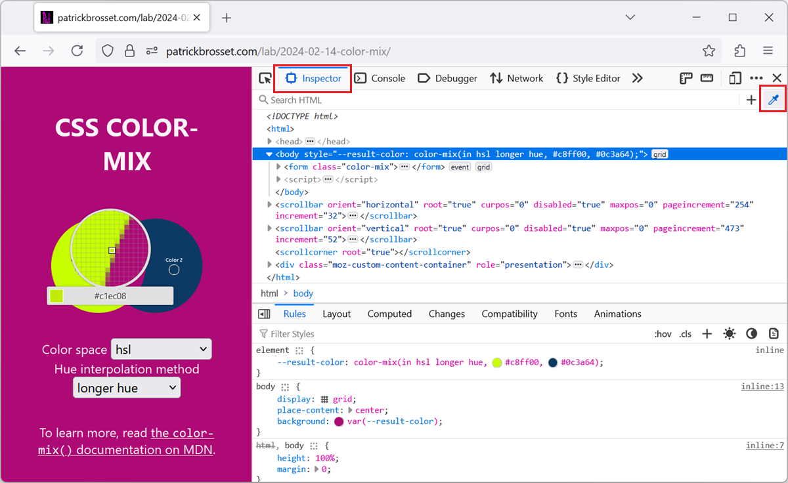
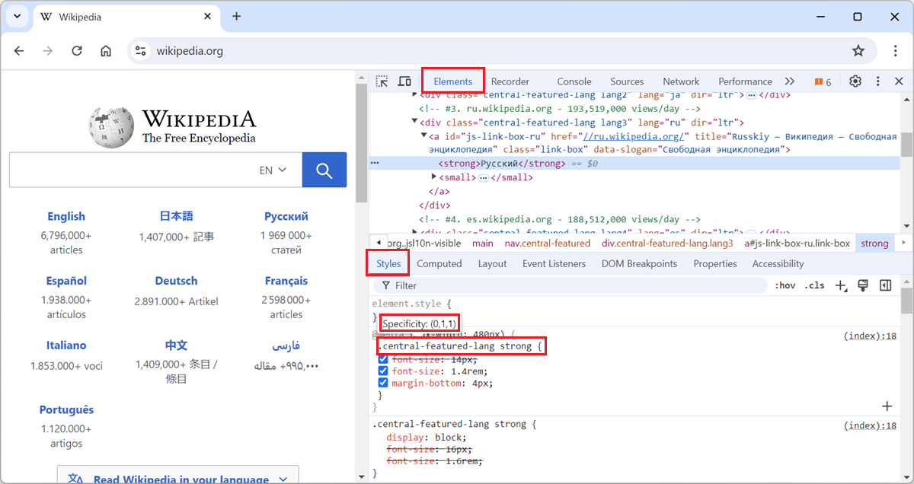
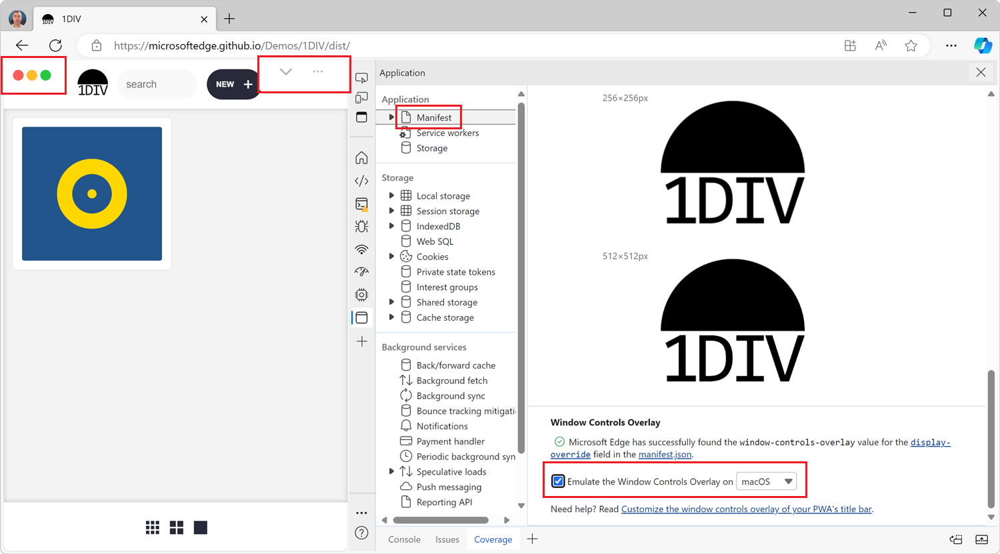

50 Css tips
-
Hide elements from the page, without changing the layout
 In the DevTools' Elements (or Inspector) tool, you can delete nodes from the DOM tree by selecting them in the tool and then pressing Delete or Backspace. While this is great to completely remove the... Read more
In the DevTools' Elements (or Inspector) tool, you can delete nodes from the DOM tree by selecting them in the tool and then pressing Delete or Backspace. While this is great to completely remove the... Read more -
Pick a color from the webpage, or the screen

When working with the CSS of a webpage, from the Elements or Inspector tool, in DevTools, there may be times when you want to reuse a existing color from the webpage, or from the screen, but might not... Read more
-
Display the specificity of a CSS selector

The specificity of a CSS selector is a score that the browser computes based on the different parts of the selector. It is used to determine which CSS rule takes precedence when multiple rules from th... Read more
-
Disable all CSS styles on the page
 To remove all CSS styles on a webpage, for example to test the accessibility of a page when styles are disabled, or to verify the order in which content is displayed, you can use the techniques below.... Read more
To remove all CSS styles on a webpage, for example to test the accessibility of a page when styles are disabled, or to verify the order in which content is displayed, you can use the techniques below.... Read more -
Find why a CSS property is overridden
 In CSS, the cascade plays a very important role in which CSS properties apply to an element. This key concept is not explained here, but you can learn more on MDN, at Cascade, specificity, and inherit... Read more
In CSS, the cascade plays a very important role in which CSS properties apply to an element. This key concept is not explained here, but you can learn more on MDN, at Cascade, specificity, and inherit... Read more -
Simulate the Window Controls Overlay feature for PWA

If you're building a desktop PWA, you might want to use the Window Controls Overlay (WCO) feature to make your app look more native. With WCO, you gain control over the entire surface area of the inst... Read more
-
See the viewport size
 The size of the viewport that's used to render a webpage in a browser can be very important at times, such as when creating or debugging media queries. You can easily know what the current size of the... Read more
The size of the viewport that's used to render a webpage in a browser can be very important at times, such as when creating or debugging media queries. You can easily know what the current size of the... Read more -
Find the offset parent of an element
 To know what an element is offset against horizontally or vertically (Which you do with position:relative and a left, top or inset value) you need to know its offset parent. The offset parent of an el... Read moreCategories: Supported by:
To know what an element is offset against horizontally or vertically (Which you do with position:relative and a left, top or inset value) you need to know its offset parent. The offset parent of an el... Read moreCategories: Supported by: -
Highlight all elements on the page that match a given CSS selector
 When you select an element in DevTools (in the Elements or Inspector tool), you see the CSS rules that apply to it. But, these rules can also apply to other elements in the page than the currently sel... Read more
When you select an element in DevTools (in the Elements or Inspector tool), you see the CSS rules that apply to it. But, these rules can also apply to other elements in the page than the currently sel... Read more -
Find the CSS rule that causes a specific style to apply
 Here is the scenario: you know there's a specific style that applies to an HTML element in your web page, say some padding, but you can't seem to find where, in the CSS code, that style is coming from... Read more
Here is the scenario: you know there's a specific style that applies to an HTML element in your web page, say some padding, but you can't seem to find where, in the CSS code, that style is coming from... Read more -
Know which of the font in a font-family was actually used
 The CSS font-family property let's you define a comma-separated list of fonts that the browser engine should choose from (in priority order) to render text. For example, with font-family: "Gill S... Read moreCategories: Supported by:
The CSS font-family property let's you define a comma-separated list of fonts that the browser engine should choose from (in priority order) to render text. For example, with font-family: "Gill S... Read moreCategories: Supported by: -
Find all elements with a specific style
 Let's say you want to list all of the elements on a page that are absolutely positioned. Or maybe you want to find all of the elements that use CSS grid. How would you do that? One way is to run a few... Read more
Let's say you want to list all of the elements on a page that are absolutely positioned. Or maybe you want to find all of the elements that use CSS grid. How would you do that? One way is to run a few... Read more -
Debug your print CSS styles by simulating print media
 If you work on a webpage that's supposed to be printed, you probably want to test your print CSS styles. You can use your browser's print preview of course, but what if you need to debug the CSS? DevT... Read more
If you work on a webpage that's supposed to be printed, you probably want to test your print CSS styles. You can use your browser's print preview of course, but what if you need to debug the CSS? DevT... Read more -
List the fonts used on a page, or an element
 "What font is that?" or "Why is this font used?" are probably questions you've asked yourself while working on a website design. However, it's not always easy to know which fonts a... Read more
"What font is that?" or "Why is this font used?" are probably questions you've asked yourself while working on a website design. However, it's not always easy to know which fonts a... Read more -
Detect unused CSS and JavaScript code
 To make sure your webpage loads and appears fast for your users, load only the CSS and JS code that your page requires to appear correctly. If some of your CSS or JS code is only needed later, when th... Read more
To make sure your webpage loads and appears fast for your users, load only the CSS and JS code that your page requires to appear correctly. If some of your CSS or JS code is only needed later, when th... Read more -
Emulate color schemes
 In CSS, you can use the prefers-color-scheme media feature (docs) to detect if the user prefers using a light or a dark theme in their operating system. This is useful to style your website in a way t... Read more
In CSS, you can use the prefers-color-scheme media feature (docs) to detect if the user prefers using a light or a dark theme in their operating system. This is useful to style your website in a way t... Read more -
Debug unwanted scrollbars
 Scrollbars can sometimes appear on a webpage unexpectedly. When this happens, finding which HTML element is the cause of the scrollbars isn't always straightforward. DevTools provides features that he... Read more
Scrollbars can sometimes appear on a webpage unexpectedly. When this happens, finding which HTML element is the cause of the scrollbars isn't always straightforward. DevTools provides features that he... Read more -
Find the most expensive CSS selectors
 When it comes to improving web rendering performance, we often spend time working on JavaScript code. But CSS has an important role to play too in how fast a web page renders. CSS selectors, in partic... Read more
When it comes to improving web rendering performance, we often spend time working on JavaScript code. But CSS has an important role to play too in how fast a web page renders. CSS selectors, in partic... Read more -
Hide or pin the information tooltip while inspecting page elements
 When selecting elements from the page using the inspect tool, the hovered elements get highlighted, and an information tooltip follows your mouse around and gives you information about the hovered ele... Read more
When selecting elements from the page using the inspect tool, the hovered elements get highlighted, and an information tooltip follows your mouse around and gives you information about the hovered ele... Read more -
Understand flexbox item sizing
 Flexbox is a great way to easily distribute elements and empty space in a row or a column, and create interesting layouts. It only takes a couple of CSS properties to create nice layouts that automati... Read moreCategories: Supported by:
Flexbox is a great way to easily distribute elements and empty space in a row or a column, and create interesting layouts. It only takes a couple of CSS properties to create nice layouts that automati... Read moreCategories: Supported by: -
Find inactive CSS styles
 Sometimes we write CSS code that's entirely valid but has absolutely no effect at all, and this can be frustrating. Indeed, there are many cases where a CSS declaration has no effect on an element. On... Read more
Sometimes we write CSS code that's entirely valid but has absolutely no effect at all, and this can be frustrating. Indeed, there are many cases where a CSS declaration has no effect on an element. On... Read more -
Inspect CSS animations
 Modern browser DevTools provide a handy tool to inspect and modify CSS animations, CSS transitions, and Web animations. These tools not only help you debug animations, but also let you modify the vari... Read more
Modern browser DevTools provide a handy tool to inspect and modify CSS animations, CSS transitions, and Web animations. These tools not only help you debug animations, but also let you modify the vari... Read more -
Copy CSS selector of an element
 To uniquely identify an element that lacks an identifier, so that you can reference the element in JavaScript and other places, use DevTools' ability to copy unique CSS selectors. All DevTools have th... Read more
To uniquely identify an element that lacks an identifier, so that you can reference the element in JavaScript and other places, use DevTools' ability to copy unique CSS selectors. All DevTools have th... Read more -
Quickly spot out-of-viewport elements
 Sometimes, either by accident or on purpose, HTML elements end up outside of the visible browser viewport. When they do, it can be really hard to find them in DevTools. Indeed, the DOM tree in the Ele... Read moreCategories: Supported by:
Sometimes, either by accident or on purpose, HTML elements end up outside of the visible browser viewport. When they do, it can be really hard to find them in DevTools. Indeed, the DOM tree in the Ele... Read moreCategories: Supported by: -
Copy an elements styles
 You can extract all the styles of an element in one go by using the Copy styles feature. No need to go through all CSS rules and properties that apply to the element in the Styles pane, and manually b... Read more
You can extract all the styles of an element in one go by using the Copy styles feature. No need to go through all CSS rules and properties that apply to the element in the Styles pane, and manually b... Read more -
Visualize and debug CSS cascade layers
 Cascade layers is a CSS feature that allows web developers to define their CSS styles in multiple layers and control the order in which these layers apply. Cascade layers are meant to bring an elegant... Read more
Cascade layers is a CSS feature that allows web developers to define their CSS styles in multiple layers and control the order in which these layers apply. Cascade layers are meant to bring an elegant... Read more -
Start your HTML and CSS prototypes in the browser directly
 Sometimes I need a blank canvas to prototype an idea with HTML and CSS. Something outside of the website I'm working on. Maybe I need a new layout or component and I'm not sure yet how to do it. In th... Read more
Sometimes I need a blank canvas to prototype an idea with HTML and CSS. Something outside of the website I'm working on. Maybe I need a new layout or component and I'm not sure yet how to do it. In th... Read more -
Debug CSS grid areas
 A really useful way to position elements on a CSS grid is using the grid-template-areas property. With it, you can give names to various areas of your grid (potentially spanning multiple cells), and t... Read more
A really useful way to position elements on a CSS grid is using the grid-template-areas property. With it, you can give names to various areas of your grid (potentially spanning multiple cells), and t... Read more -
Emulate forced-color mode
 Operating systems offer an accessibility feature where the colors shown on the screen are converted to offer higher contrast. When you use this feature, it impacts all the content on the screen: your... Read more
Operating systems offer an accessibility feature where the colors shown on the screen are converted to offer higher contrast. When you use this feature, it impacts all the content on the screen: your... Read more -
Paste multiple CSS declarations at once
 You know how you can paste a CSS property name or value in the Styles (or Rules) panel? Well, you can actually paste several declarations at once too! For example, try copying the following entire CSS... Read more
You know how you can paste a CSS property name or value in the Styles (or Rules) panel? Well, you can actually paste several declarations at once too! For example, try copying the following entire CSS... Read more -
Select elements with pointer-events:none by holding Shift
 When selecting elements from the page they normally get highlighted on hover and selected on click. However certain elements can't be selected. Indeed, if an element does not react to pointer events b... Read more
When selecting elements from the page they normally get highlighted on hover and selected on click. However certain elements can't be selected. Indeed, if an element does not react to pointer events b... Read more -
Highlight the effect of individual CSS properties on hover
 How do certain CSS properties apply to the page isn't always an easy question to answer. While some properties might be considered simple, others have complex effects that depend on other factors. Pro... Read more
How do certain CSS properties apply to the page isn't always an easy question to answer. While some properties might be considered simple, others have complex effects that depend on other factors. Pro... Read more -
Visualize the effect of CSS transforms
 CSS transforms can sometimes be hard to wrap your head around, especially when chaining multiple transformations. Firefox helps with a cool visualization tool that allows you to see how and where the... Read moreCategories: Supported by:
CSS transforms can sometimes be hard to wrap your head around, especially when chaining multiple transformations. Firefox helps with a cool visualization tool that allows you to see how and where the... Read moreCategories: Supported by: -
Copy a CSS rule as CSS-in-JS format
 Do you use a CSS-in-JS framework? If so, you know how frustrating it can be to copy CSS from DevTools and paste it into your code. Indeed if the CSS you worked on in the Styles panel looks like this:... Read more
Do you use a CSS-in-JS framework? If so, you know how frustrating it can be to copy CSS from DevTools and paste it into your code. Indeed if the CSS you worked on in the Styles panel looks like this:... Read more -
Simulate pseudo CSS classes
 If you use :hover, :active, or other pseudo-classes in your CSS code, it can be tedious to test them. For example, having to hover over an element which is styled with the :hover pseudo-class means th... Read more
If you use :hover, :active, or other pseudo-classes in your CSS code, it can be tedious to test them. For example, having to hover over an element which is styled with the :hover pseudo-class means th... Read more -
See the page in 3D
 See your page in 3 dimensions to quickly find out how deeply nested it is, fix z-index stacking issues, and performance issues. In Edge # Open the Command Menu by pressing ctrl+shift+P (or cmd+shift+... Read more
See your page in 3 dimensions to quickly find out how deeply nested it is, fix z-index stacking issues, and performance issues. In Edge # Open the Command Menu by pressing ctrl+shift+P (or cmd+shift+... Read more -
Easily change CSS number values from the keyboard in increments of 0.1, 1, 10, 100
 When playing with styling or layout code in DevTools, it's useful to be able to change widths, margins, and other CSS number values quickly. Manually entering new numbers works of course, but it gets... Read more
When playing with styling or layout code in DevTools, it's useful to be able to change widths, margins, and other CSS number values quickly. Manually entering new numbers works of course, but it gets... Read more -
Find and export CSS changes
 If you spent time changing CSS in DevTools, either in the Rules panel (in Firefox), or in the Sources or Styles panels (in Chrome or Edge), and you don't remember all of the changes you made, you can... Read more
If you spent time changing CSS in DevTools, either in the Rules panel (in Firefox), or in the Sources or Styles panels (in Chrome or Edge), and you don't remember all of the changes you made, you can... Read more -
Edit CSS shadow visually
 If you don't remember the CSS syntax for the box-shadow property (and who does!), then Chrome and Edge can help you with their visual shadow editor! Select an element that has some shadow applied. Go... Read more
If you don't remember the CSS syntax for the box-shadow property (and who does!), then Chrome and Edge can help you with their visual shadow editor! Select an element that has some shadow applied. Go... Read more -
Jump from a CSS variable usage to where it is defined
 CSS custom properties (also called variables) are very useful to avoid repeating values in CSS, like colors for example. You can define and use a custom property as shown below: rule-1 { --my-main-co... Read more
CSS custom properties (also called variables) are very useful to avoid repeating values in CSS, like colors for example. You can define and use a custom property as shown below: rule-1 { --my-main-co... Read more -
Convert color formats
 Colors in CSS can be expressed in a number of different formats: keyword (e.g. blue), RGB, HSL, hexadecimal, and others. In DevTools, you can easily convert from one format to the next. Find an eleme... Read more
Colors in CSS can be expressed in a number of different formats: keyword (e.g. blue), RGB, HSL, hexadecimal, and others. In DevTools, you can easily convert from one format to the next. Find an eleme... Read more -
Edit CSS absolute and relative positions by dragging points in the page
 Firefox features a position editor that lets you move elements in the page by drag and drop. This works with elements that are positioned in CSS with position:relative or position:absolute and that ha... Read moreCategories: Supported by:
Firefox features a position editor that lets you move elements in the page by drag and drop. This works with elements that are positioned in CSS with position:relative or position:absolute and that ha... Read moreCategories: Supported by: -
Convert font property units
 Font CSS properties such as font-size, line-height or letter-spacing can be expressed in multiple different length units (like many other CSS properties). Firefox, Chrome and Edge allow you to convert... Read more
Font CSS properties such as font-size, line-height or letter-spacing can be expressed in multiple different length units (like many other CSS properties). Firefox, Chrome and Edge allow you to convert... Read more -
Apply CSS styles to console messages
 The console.log output can be styled in DevTools using CSS. console.log('%c Hello World', 'color: orange; font-size: 2em;');... Read more
The console.log output can be styled in DevTools using CSS. console.log('%c Hello World', 'color: orange; font-size: 2em;');... Read more -
Draw a box around all elements to debug your CSS and page structure
 Simple, yet powerful, * { outline: 1px solid red; } is a useful debugging trick that helps understanding the page structure, finding overflow bugs or understand why elements are being pushed away for... Read more
Simple, yet powerful, * { outline: 1px solid red; } is a useful debugging trick that helps understanding the page structure, finding overflow bugs or understand why elements are being pushed away for... Read more -
Edit CSS angles
 In CSS, several different properties use angle unit values, such as the rotate() function of a transform or the linear-gradient orientation of a background-image, and more. In Chrome and Edge, whereve... Read more
In CSS, several different properties use angle unit values, such as the rotate() function of a transform or the linear-gradient orientation of a background-image, and more. In Chrome and Edge, whereve... Read more -
Edit clip-path and shape-outside CSS properties by dragging points in the page
 The clip-path property is a great way to change the final shape of an element and give it the shape that you want. You can use this property to make an element be a circle, an ellipse, a polygon or an... Read moreCategories: Supported by:
The clip-path property is a great way to change the final shape of an element and give it the shape that you want. You can use this property to make an element be a circle, an ellipse, a polygon or an... Read moreCategories: Supported by: -
Tweak css grid and flexbox alignment properties
 Chrome and Edge both have a visual editor useful for tweaking flexbox and grid alignment properties. Head over to the Elements panel Select an element that is either a grid or flexbox container In th... Read more
Chrome and Edge both have a visual editor useful for tweaking flexbox and grid alignment properties. Head over to the Elements panel Select an element that is either a grid or flexbox container In th... Read more -
Highlight all the elements that a CSS rule matches
 When you want to know which elements a given CSS rule will apply to, in addition to the currently selected element, you can: In Firefox: In the Style Editor panel: hover over any rule selector for s... Read more
When you want to know which elements a given CSS rule will apply to, in addition to the currently selected element, you can: In Firefox: In the Style Editor panel: hover over any rule selector for s... Read more -
Edit CSS filters
 The filter property in CSS lets you change the way a particular element gets rendered. Firefox provides a visual editor to play with CSS filters. You can add or remove filter functions from the list,... Read moreCategories: Supported by:
The filter property in CSS lets you change the way a particular element gets rendered. Firefox provides a visual editor to play with CSS filters. You can add or remove filter functions from the list,... Read moreCategories: Supported by:
 edge
edge
 chrome
chrome
 firefox
firefox
 polypane
polypane
 safari
safari